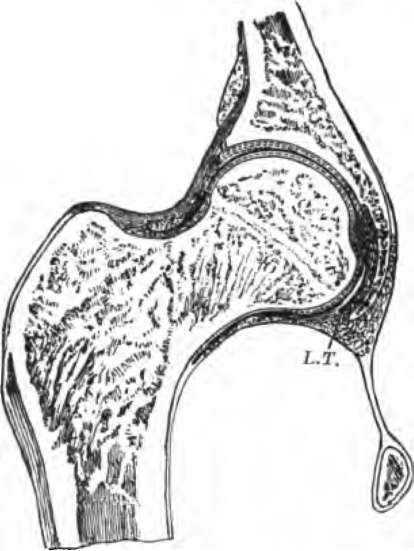

Chapter VI. Joints
Description
This section is from the book "The Human Body: An Elementary Text-Book Of Anatomy, Physiology, And Hygiene", by H. Newell Martin. Also available from Amazon: The Human Body.
Chapter VI. Joints
The movements of the body are brought about by means of soft reddish organs known as the muscles; the lean of meat is muscle, so every one knows what a dead muscle looks like.* Muscles have the power of shortening with considerable force ; when they do so they pull their ends towards one another and swell out in the middle; in other words, they become shorter and thicker. With few exceptions the ends of a muscle are attached to separate bones † between which a joint lies, and when the muscle shortens, or, in physiological language, contracts, it produces movement at the joint. The joints and muscles thus form the chief motor apparatuses of the body.
What organs produce the movements of the body? What is the technical name of the lean of meat? What power do muscles possess? What happens when they exert it? To what are the ends of most muscles attached? What happens when the muscle contracts? Name the chief motor apparatuses of the body?
* In many animals some muscles are much redder than others, and it is then found that the deeper colored are those which are kept most constantly in use; the leg muscles of a chicken, for example, are redder thaw those of the wings and breast, and as the coloring matter is turned brown by heat, they form the " dark meat" after cooking ; in birds which fly a great deal the breast muscles (which chiefly move the wings) are also dark. The heart, which is a muscle always at work, is deep red, even in fishes, most of whose muscles are pale.
† As an example of a muscle not attached to the skeleton, we may take the orbicularis oris, which forms a ring around the mouth-opening beneath the skin of the lips : when it contracts it closes the mouth, or if it contracts more forcibly purses out the lips. The orbicularis palpebrarum forms a similar ring around the eye opening, and when it contracts closes the eye.
Joints
Articulations which permit of movement by the gliding of one bone over another are called joints; all are constructed on the same general plan, though the range and direction of movement permitted are different in different joints. As an example we may take the hip-joint, a section through which is represented in Fig. 26.
Fig. 26. Section through the hip-joint.
On the outer side of the os innominatum (s, Fig. 8) is a deep hollow, the acetabulum, which receives the upper end of the thigh-bone. The acetabulum is lined by a thin layer of cartilage, with an extremely smooth surface, and its cavity is also deepened by a cartilaginous rim. The upper end of the femur consists of a nearly spherical head, borne on a narrower neck ; this head is covered by cartilage, and rolls smoothly in the acetabulum like a ball in a socket If the hard bones came into direct contact they would be apt to chip one another when a sudden movement was made, especially if the hip-joint were so far bent as to knock the thigh-bone against the rim of the acetabulum; the elastic and yielding cartilage forms a protecting cushion between the bones and prevents this.
What is a joint? How do Joints differ? Describe the hip-joint.
To keep the bones in place and limit the range of movement, ligaments pass from one to the other ; they are composed of connective tissue, are extremely pliable but cannot be stretched, and are very tough and strong. One is the capsular ligament, which forms a bag all round the joint, and another is the round ligament, L. T., Fig. 26, which passes from the rim of the acetabulum to the head of the femur ; from the rim of the socket it passes to the center of the acetabulum along a groove in the bone, and then turns out to be fixed to the thigh-bone.
Covering the inside of the capsular ligament and continued over the cartilages of the joint is the synovial membrane, very thin and composed of a layer of flat cells. This pours out into the joint a very small quantity of synovial liquid, which is somewhat like the white of a raw egg in consistency, and plays the part of the oil moistening those surfaces of a machine which glide over one another; it lubricates the joint and enables all to run smoothly and with but little friction.
In the natural state of the parts the synovial membrane on the head of the thigh-bone lies close against that lining the acetabulum, so that practically there is no cavity left in the joint. This close contact is not maintained by the ligaments (which are much too loose, and serve mainly to prevent such excessive movement as might roll the femur quite out of its socket), but by the many strong muscles which pass between pelvis and thigh-bone and hold both firmly together. In addition, the pressure of the atmosphere is transmitted by the skin and muscles to the exterior of the air-tight joint, and helps to keep its surfaces together. If all the muscles be cut away from around the hip-joint of a dead body, it is found that the head of the femur is still held in its place by the pressure of the air; and so firmly that the weight of the whole limb will not draw it out; but if a hole be pierced into the bottom of the acetabulum, and air be thus let into the joint, then the thigh-bone falls out of place as far as the ligaments will let it.
What is the use of the cartilage lining the bones which move over one another in a joint?
What is the use of ligaments? Of what are they composed? What are their properties? Name some ligaments of the hip-joint. Where does the capsular ligament lie? Where the round ligament? What membrane lines the joint? Of what is it composed? What does it pour into the joint? What is synovial liquid like? What is its use? Illustrate by an example.
In all joints we find the same essential parts; bones, articular cartilages, synovial membrane, synovial liquid, and ligaments.*
Continue to: